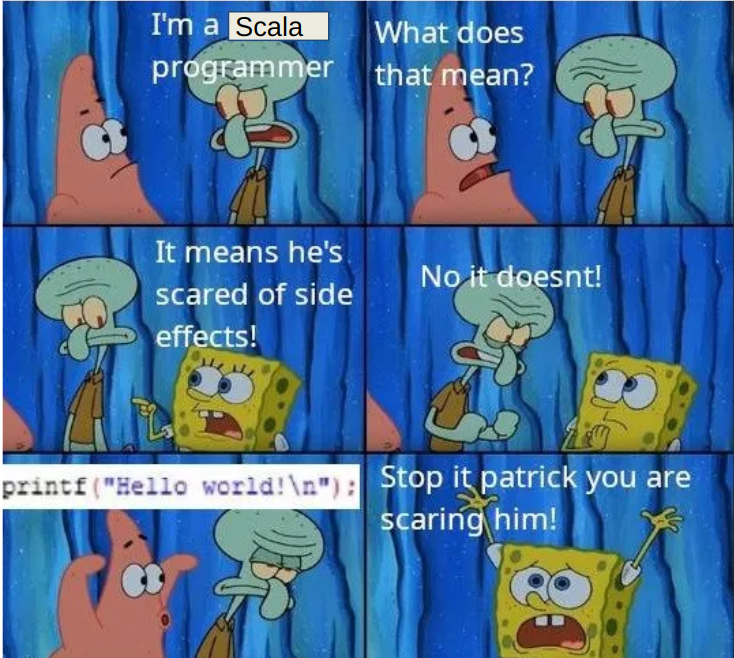

Научились объединять код с общей логикой в процедуры для переиспользования
int main() {
int num1, num2, sum;
// Запрос ввода первого числа
printf("Введите первое число: ");
scanf("%d", &num1);
// Запрос ввода второго числа
printf("Введите второе число: ");
scanf("%d", &num2);
// Вычисление суммы
sum = num1 + num2;
// Вывод результата
printf("Сумма чисел %d и %d равна %d\n", num1, num2, sum);
return 0;
}
Пришла идея предасавления программы как взаимодействия сущностей, каждая из которых инкапсулирует в себе логику
// Интерфейс Animal
interface Animal {
void makeSound(); // Метод, который должны реализовать все животные
}
// Класс Cat, реализующий интерфейс Animal
class Cat implements Animal {
@Override
public void makeSound() {
System.out.println("Мяу!"); // Кошка мяукает
}
}
// Класс Dog, реализующий интерфейс Animal
class Dog implements Animal {
@Override
public void makeSound() {
System.out.println("Гав!"); // Собака гавкает
}
}
Борщ - суп, приготовленный на основе мясного бульона с обязательным использованием свеклы, обжаренной или тушеной с другими овощами, и дополненный картофелем, капустой, зеленью и специями
SELECT
employees.employee_id,
employees.first_name,
employees.last_name,
departments.department_name,
employees.salary
FROM
employees
JOIN
departments ON employees.department_id = departments.department_id
WHERE
employees.salary > 50000
ORDER BY
employees.salary DESC;
f(g(x)) = (g ဝ f)(x)
Идеальная программа в функциональном стиле - композиция функций
class Handler {
var rootDocument: Option[Document] = None
...
def startDocument() = ...
def endDocument(resultTmpSource: File) = {
val result = Source.fromFile(resultTmpSource).getLines()
val resultDocument = new Document(result)
rootDocument = Some(resultDocument)
}
}
class Parser {
def parse(source: InputStream, handler: Handler) = {
val resultSource = Files.createTmpFile("result.txt")
handler.startDocument()
try {
// что-то парсим
...
} finally {
handler.endDocument()
resultSource.close() // удаляем временный файл
}
}
}
val parser = new Parser()
val handler = new Handler()
runWithTimeout(
task = () => parser.parse(source, handler), // запуск в отдельном потоке
fallback = () => handler.rootDocument,
1.minutes // поток убивается по истечении таймаута
)
Обыкновенная рекурсивная функция для нахождения факториала
def factorial(n: Int): Int = {
if (n <= 1) 1
else n * factorial(n - 1)
}
Функция с хвостовой рекурсией
@tailrec
def factoriaTail(n: Int, acc: Int = 1): BigInt = {
if (n <= 1) acc
else factorialTail(n - 1, n * acc)
}
Значение функции зависит только от ее аргументов. Выполнение функции также не оказывает влияния на внешний мир.
Любое чтение данных, запись, любое взаимодействие с чем-то выходящем за пределы функции рассматривается как побочный эффект.
Функция - обычный объект. Ее можно передавать как аргумент, возвращать как результат вычисления.
Такой подход дает позволяет комбинировать функции. Также удобно реализовывать ленивые вычисления.
Как бонус такой код намного лаконичнее и более удобен для чтения и анализа.
Стараемся привести выполнение любой логики к виду простого отображения
Выходные параметры => Результат
Option(3)
.filter(_ > 3)
.map(_ * 2)
Right("Result string")
.filter(_.size > 3)
.map(_.toLowerCase)
List("1", "2", "4", "5", "6")
.map(_.toInt)
.filter(_ > 3)
Future(veryLongFunction())
.map(result => println("success: " + result))
Побочные эффекты (side effects) — любые действия работающей программы, изменяющие среду выполнения

trait DataBaseService[T] {
def find(id: String): T
def insert(entity: T): Unit
}
object SideEffect {
case class Person(id: String, name: String, age: Int)
def addPersonIfNotExists(person: Person): Unit = ???
}
trait DataBaseService[T] {
def find(id: String): T
def insert(entity: T): Unit
}
object SideEffect {
case class Person(id: String, name: String, age: Int)
def addPersonIfNotExists(person: Person) (dbService: DataBaseService[Person]): Unit = {
val existPerson = dbService.find(person. id)
???
}
}
trait DataBaseService[T] {
def find(id: String): T
def insert(entity: T): Unit
}
object SideEffect {
case class Person(id: String, name: String, age: Int)
def addPersonIfNotExists(person: Person) (dbService: DataBaseService[Person]): Unit = {
val existPerson = dbService.find(person. id)
???
}
}
java.lang.NullPointerException
at com.example.SideEffect$.addPersonIfNotExists(SideEffect.scala:10)
at com.example.Main$.main(Main.scala:5)
at com.example.Main.main(Main.scala)
val maybePerson: Option[Person] = if (exists) Some(person) else None
trait DataBaseService[T] {
def find(id: String): Option[T]
def insert(entity: T): Unit
}
object SideEffect {
case class Person(id: String, name: String, age: Int)
def addPersonIfNotExists(person: Person)(dbService: DataBaseService[Person]): Unit = {
val existPersonOpt = dbService.find(person. id)
// Проверяем, что запрос вернул не пустой объект
if (existPersonOpt.isEmpty)
dbService.insert(person)
}
}
java.sql.SQLException: Error connecting to database.
at DatabaseConnection.main(Unknown Source)
Caused by: java.net.SocketException: Connection reset
at java.base/sun.nio.ch.NioSocketImpl.implRead(NioSocketImpl.java:326)
... 3 more
val result: Either[String, Person] = if (exception) Left(errMsg) else Right(person)
trait DataBaseService[T] {
def find(id: String): Either[Throwable, Option[T]
def insert(entity: T): Either[Throwable, Unit]
}
object SideEffect {
case class Person(id: String, name: String, age: Int)
def addPersonIfNotExists(person: Person)(dbService: DataBaseService[Person]): Unit = {
val personQueryResult = dbService.find(person.id)
// Проверяем, что запрос прошел без ошибок
val result: Either[Throwable, Unit] =
if (personQueryResult.isRight) {
// Извлекаем объект из контейнера Either
val existsPersonOpt = personQueryResult.getOrElse(None)
// Проверяем, что запрос вернул не пустой объект
val insertQueryResult =
if (existsPersonOpt.isEmpty)
dbService.insert(person)
else
Right(()) // Отсутсвие сущ. записи - не ошибка, значит ставим загрушку
insertQueryResult
} else
personQueryResult.map(_ => ()) // Возвращаем наш запрос с ошибкой,
// но приводим к нужному типу
// Обрабатываем итоговый результат, в случае ошибки, просто выводим
result.fold(егг => println(err.getMessage()), res => res)
}
}
trait DataBaseService[T] {
def find(id: String): Either[Throwable, Option[T]
def insert(entity: T): Either[Throwable, Unit]
}
object SideEffect {
case class Person(id: String, name: String, age: Int)
def addPersonIfNotExists(person: Person)(dbService: DataBaseService[Person]): Unit = {
dbService.find(person. id)
.flatMap { existsPersonOpt =>
existsPersonOpt
.map(person => dbService.insert(person))
.getOrElse(Right(()))
}.fold(err => println(err.getMessage()), res => res)
}
}
trait DataBaseService[T] {
def find(id: String): Either[Throwable, Option[T]
def insert(entity: T): Either[Throwable, Unit]
}
object SideEffect {
case class Person(id: String, name: String, age: Int)
def addPersonIfNotExists(person: Person)(dbService: DataBaseService[Person]): Unit = {
for {
existsPersonOpt <- dbService.find(person.id)
_ <- existPersonOpt.map(dbService.insert).getOrElse(Right())
} yield ()
}.fold(err => println(err.getMessage()), res => res)
}